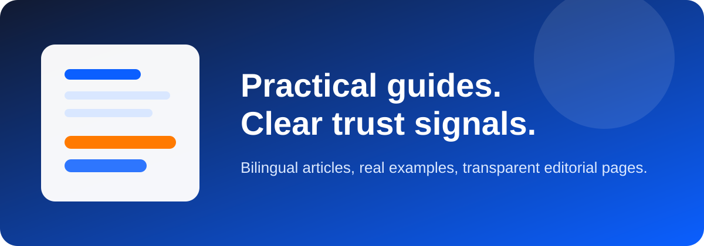

Saving & Budgeting
Simple systems to control monthly spending and save consistently.
PaisaPilot
Clear and practical personal finance content with separate English and Hindi sections for easier reading.
Simple systems to control monthly spending and save consistently.
Understand charges, interest, and smart borrowing decisions.
Practical rules to avoid UPI scams and online payment fraud.
हर महीने खर्च कंट्रोल करने और नियमित बचत करने के आसान तरीके।
चार्ज, ब्याज और सही उधार निर्णय समझने की स्पष्ट गाइड।
UPI फ्रॉड और ऑनलाइन स्कैम से बचने के व्यावहारिक नियम।
Set a practical emergency fund target based on your real monthly risk.
Begin with confidence using a simple long-term SIP framework.
Improve score with payment discipline and lower utilization.
आय और जोखिम के हिसाब से सही इमरजेंसी फंड तय करें।
छोटी राशि से नियमित निवेश का आसान रोडमैप।
स्कोर बेहतर करने के practical daily habits अपनाएं।
Handle a missed bill quickly, reduce damage, and stop the same mistake from repeating.
Spot pressure tactics, unsafe permissions, and data traps before urgent borrowing turns risky.
Review, cancel, and track UPI mandates without missing important payments.
Protect your account fast, save proof, and report suspicious transactions the right way.
Use autopay for essential payments and keep manual review where mistakes are costly.
Reduce fraud risk from OTP traps, fake urgency, and suspicious payment requests.
Find recurring charges and stop low-value renewals before they weaken your budget.
Keep account nominee details updated so your family faces less confusion later.
Build a cleaner money system by separating salary flow from savings structure.
Create a calm cash plan for medical stress without damaging the rest of your finances.
Build a safer cash buffer when income is irregular and work can slow down suddenly.
Learn how card usage ratio affects score quality even when you pay on time.
Compare total cost, cashflow stress, and offer traps before buying on EMI.
Set weekly limits and category caps to reduce food overspending.
Use staggered fixed deposits for better liquidity and low-risk planning.
Select real protection cover with practical claim-focused checks.
Pre-fund annual expenses and reduce debt dependence.
Use salary slip numbers for cleaner budgeting and tax planning.
Find hidden charges and spending leaks with a monthly statement check.
Choose policy quality by claim rules, not just low premium.
Understand risk with horizon, volatility comfort, and allocation discipline.
Compare two practical payoff methods to reduce debt faster.
Income growth can materially improve long-term savings capacity.
A shared workflow for goals, spending clarity, and fewer money conflicts.
Missed bill ke baad damage control aur next cycle ko stable karne ki practical guide.
Urgent loan pressure, hidden fees, aur unsafe permissions ko pehchanne ke simple signals.
Recurring mandates ko review karke low-value debits ko safely band karein.
Unauthorized transaction dikhte hi account secure aur complaint fast kaise karein.
Essential payments ke liye autopay aur baaki ke liye review-based system use karein.
OTP, fake calls, aur urgency scams se bachne ke liye simple practical rules.
Recurring charges ko review karke monthly waste ko practical tareeke se cut karein.
Important accounts me nominee details updated rakhne ki simple checklist.
Salary inflow aur savings system ko alag role dene ki practical guide.
Stress ke time me better money priorities set karne ki simple guide.
Irregular income होने पर stronger cash buffer बनाने की practical guide.
समझें कि card usage ratio score और loan profile पर कैसे असर डालता है.
Checkout offers को total cost और monthly pressure के हिसाब से compare करें.
Weekly limit और category tracking से grocery spending कंट्रोल करें।
Short-term savings को staggered FDs से ज्यादा flexible रखें।
Family income protection के लिए practical cover framework.
Irregular खर्चों को monthly system से manage करें।
Salary data को budget और tax planning में सही use करें।
हर महीने statement review से खर्च leaks और गलत charges पकड़ें।
Policy लेते समय claim usability वाले नियम पहले check करें।
समय अवधि और allocation के हिसाब से risk को समझने की practical guide.
दो repayment strategies की स्पष्ट तुलना।
आय बढ़ाने की strategy का long-term finance पर बड़ा प्रभाव।
पति-पत्नी के लिए practical family money system.

Each article focuses on step-by-step decisions, examples, and common mistakes to avoid.
Read our Editorial Policy for quality checks, corrections, and update standards.
If you find an issue, contact us at Contact. We review and update content quickly.